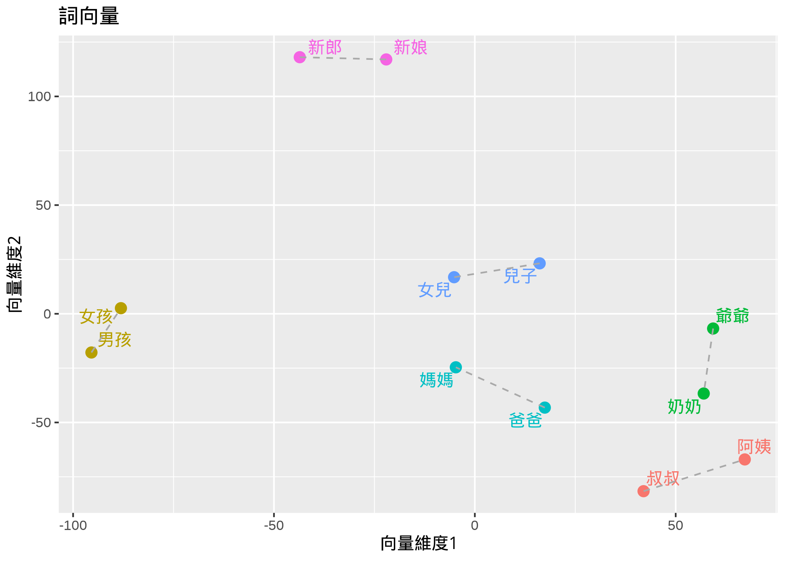

語料庫語言學：
語言的數據之旅
陳正賢(Alvin Cheng-Hsien Chen)

背景介紹
語料庫語言學是什麼呢？
- 當我們學習一門語言時，我們需要了解該語言的語法、詞彙和用法。
- 語料庫語言學是一種基於語言使用實例（即語料庫）作為研究言語使用的研究方法。
- 語言學家可以通過分析語料庫中的實際語言使用情況來研究語言的結構和用法。
- 研究者也可透過語料庫，挖掘潛在的語言使用趨勢或模式。
什麼是語料庫？
- 語料庫就是一個大型的文字資料庫。
- 可以人工收集建立，也可以是透個電腦程式自動創建。
- 語料庫建置時考量的重點：
- 代表性(單一樣本可否代表類型全體？)
- 平衡性(樣本種類是否可涵蓋全部類型？)
- 真實性(樣本是否為真實語境語言使用？)
常見的語料庫
國內
國外
我們能從語料庫挖出什麼有意思的東西呢？
以華語流行音樂歌詞庫為例
詞頻探索
詞彙頻率
詞雲圖

Keyword-in-Context (Concordances)
搭配詞（多字詞組）
歌曲中常見搭配詞組
collocation count count_nested length lambda z
1 一步 一步 317 0 2 7.142421 92.79538
2 忘不了 忘不了 163 0 2 7.938964 72.85953
3 一天 一天 392 0 2 3.871724 70.27536
4 一次 一次 262 0 2 4.161528 62.05014
5 從來 沒有 302 0 2 4.239605 60.75000
6 一遍 一遍 116 0 2 6.558173 59.85883
7 整個 世界 214 0 2 4.905384 58.56774
8 一年 一年 112 0 2 6.454266 58.45154
9 海角 天邊 101 0 2 7.758391 57.94513
10 一杯 一杯 111 0 2 6.280492 57.30612
11 一層 一層 89 0 2 9.413687 56.83481
12 閉上 雙眼 84 0 2 7.797073 51.30270
13 恭喜 恭喜 63 0 2 9.349757 50.37369
14 一聲 一聲 102 0 2 5.470507 50.20502
15 叮噹 叮噹 68 0 2 10.057311 50.13569
16 恰恰 恰恰 61 0 2 9.063092 50.10165
17 出去 走走 63 0 2 8.696643 49.84629
18 用盡 力氣 62 0 2 7.844331 49.46918
19 呀呀 呀呀 62 0 2 9.806075 49.22620
20 永遠 永遠 335 0 2 2.768022 48.29602
21 緊緊 擁抱 119 0 2 4.896011 48.15019
22 不要 不要 339 0 2 2.730361 47.95029
23 不在 身邊 128 0 2 4.668397 47.88164
24 一口 一口 57 0 2 7.585022 47.47736
25 喜歡 喜歡 177 0 2 3.738097 47.05302
26 天上 星星 71 0 2 6.198675 46.37156
27 每分 每秒 66 0 2 10.584630 46.01729
28 回到 最初 79 0 2 5.710697 45.81075
29 伸出 雙手 72 0 2 7.386940 45.66864
30 回來 回來 97 0 2 4.985966 45.59026
31 一道 彩虹 60 0 2 6.627982 44.94356
32 一直 一直 153 0 2 3.833612 44.93473
33 最後 一次 171 0 2 3.604659 44.79276
34 停下 腳步 59 0 2 7.179125 44.38268
35 滴答 滴答 44 0 2 9.562993 43.96095
36 重新 來過 53 0 2 7.502082 43.95991
37 一幕 一幕 43 0 2 8.861837 43.93273
38 年少 輕狂 49 0 2 9.177158 43.90406
39 一站 一站 43 0 2 8.566546 43.79489
40 上天 安排 54 0 2 6.890264 43.68412
41 好想你 好想你 43 0 2 8.223302 43.43042
42 差不多 差不多 45 0 2 7.740075 43.36601
43 漫漫 長路 45 0 2 7.673120 43.20865
44 皇后 大道 43 0 2 9.863822 43.16824
45 一朵花 一朵花 40 0 2 9.015519 42.73480
46 回到 從前 96 0 2 4.650807 42.73325
47 提出 勇氣 68 0 2 7.612801 42.73298
48 一句 我愛你 106 0 2 4.393743 42.67039
49 拜拜 拜拜 40 0 2 8.465111 42.46387
50 命運 安排 73 0 2 5.405214 42.34001
51 心愛 心愛 90 0 2 4.745065 42.24290
52 曾經 擁有 131 0 2 3.879709 42.18615
53 浮浮 沉沉 62 0 2 11.500707 41.85303
54 愛呀 愛呀 40 0 2 10.039900 41.77866
55 無法 抗拒 71 0 2 5.683381 41.73150
56 慢慢 慢慢 118 0 2 4.039003 41.65464
57 睜開 雙眼 53 0 2 7.619966 41.53956
58 姑娘 姑娘 66 0 2 5.505608 41.36880
59 不想 不想 184 0 2 3.178369 41.29929
60 永遠 不會 258 0 2 2.657440 41.01846
61 想念 想念 90 0 2 4.573824 40.92741
62 做好 準備 46 0 2 7.441254 40.71562
63 快快 快快 42 0 2 7.156508 40.53946
64 許下 心願 41 0 2 7.561279 40.51475
65 媽媽 媽媽 61 0 2 5.610795 40.50184
66 兜兜 轉轉 51 0 2 11.044886 40.12630
67 不離 不棄 44 0 2 10.552720 40.05919
68 香港 香港 37 0 2 7.743709 39.95285
69 高聲 歡呼 35 0 2 8.239477 39.90077
70 哈囉 哈囉 35 0 2 10.012579 39.87618
71 我心 裡的 86 0 2 4.600516 39.84478
72 夜來香 夜來香 39 0 2 10.726190 39.80550
73 一圈 一圈 35 0 2 8.065668 39.67479
74 一雙 翅膀 52 0 2 5.959003 39.44094
75 生日快樂 生日快樂 37 0 2 10.647061 39.34315
76 叮咚 叮咚 37 0 2 10.716859 39.16903
77 我愛你 我愛你 92 0 2 4.299915 39.16692
78 難分 難離 41 0 2 10.820240 39.13076
79 回家 回家 67 0 2 5.073185 38.96276
80 爸爸 爸爸 42 0 2 6.665363 38.80525
81 沒有 辦法 123 0 2 4.171451 38.64903
82 心愛 的人 64 0 2 5.181442 38.61235
83 代替 地位 39 0 2 7.812348 38.51573
84 多年 以後 66 0 2 5.165549 38.33586
85 沒什麼 大不了 35 0 2 7.931519 38.32993
86 一路 走來 40 0 2 7.272276 38.29905
87 真的 真的 162 0 2 3.128080 38.28384
88 咿呀 咿呀 30 0 2 9.537574 38.17366
89 不該 不該 57 0 2 5.413071 38.14554
90 張開 雙手 54 0 2 5.622683 37.97411
91 我要 我要 124 0 2 3.547830 37.88982
92 一滴 一滴 38 0 2 6.834210 37.73443
93 跟我走 跟我走 29 0 2 9.032455 37.72723
94 晚會 爆炸 35 0 2 9.587881 37.70412
95 滴滴答答 滴滴答答 30 0 2 10.078461 37.65911
96 難以 抗拒 40 0 2 6.593218 37.62016
97 我來 我來 33 0 2 7.509469 37.49614
98 鏡子 裡的 44 0 2 6.325214 37.48964
99 一寸 一寸 29 0 2 8.554819 37.39562
100 何日 再來 36 0 2 7.160128 37.33582「男人」搭配詞
collocation count count_nested length lambda z
2189 男人 見識 12 0 2 6.410418 19.969525
3490 女人 男人 21 0 2 3.623088 16.473018
3519 男人 女人 21 0 2 3.607474 16.404525
3542 男人 壞到 10 0 2 8.179858 16.354765
3677 男人 男人 18 0 2 3.800181 16.027876
3775 男人 事實 10 0 2 5.064567 15.770568
4966 承認 男人 12 0 2 3.712119 12.920339
6087 男人 流淚 11 0 2 3.161712 10.600838
7057 一個 男人 29 0 2 1.637578 8.743954
7887 男人 總是 10 0 2 2.199735 7.074064
9721 男人 世界 10 0 2 1.129870 3.638327
10560 男人 沒有 10 0 2 0.523445 1.686091「女人」搭配詞
collocation count count_nested length lambda z
473 小心 女人 40 0 2 4.6842418 28.440074
631 女人 女人 46 0 2 4.0839122 26.883573
840 可愛 女人 41 0 2 4.0665549 25.342790
1663 女人 小心 27 0 2 4.2824829 21.746949
1898 女人 花花 15 0 2 5.9792362 20.971885
2707 每夜 女人 16 0 2 4.7435514 18.496932
2749 越陷越深 女人 11 0 2 6.7379181 18.390776
2918 女人 搖曳 13 0 2 5.1584439 17.911688
2938 一個 女人 70 0 2 2.1920995 17.862715
3382 女人 的心 18 0 2 3.9935439 16.776873
3490 女人 男人 21 0 2 3.6230881 16.473018
3519 男人 女人 21 0 2 3.6074739 16.404525
3665 女人 竟然 15 0 2 4.1859931 16.058544
3685 女人 獨有 10 0 2 5.2494468 16.015600
4205 紅塵 女人 13 0 2 4.0885410 14.673714
4393 女人 隨風 13 0 2 3.9645069 14.259627
5718 女人 不該 12 0 2 3.2509029 11.347956
6136 女人 容易 12 0 2 3.0044061 10.505688
6598 女人 溫柔 18 0 2 2.2586888 9.617952
6664 只是 女人 20 0 2 2.1245706 9.519890
7201 愛的 女人 15 0 2 2.1607843 8.434186
7427 每個 女人 12 0 2 2.2701533 7.964028
7618 美麗 女人 16 0 2 1.8817403 7.580327
7913 女人 感情 11 0 2 2.0853376 7.023083
8059 女人 到底 10 0 2 2.1041094 6.773450
9091 女人 需要 10 0 2 1.5028452 4.843472
9936 女人 不要 11 0 2 0.9530233 3.215078
10606 女人 一個 12 0 2 0.4306704 1.514661
關鍵詞
文本相似性比較

語料庫與自然語言處理技術結合
文本分析與探勘
文本分析是一種研究或處理文本數據（包括書面文字、語音轉錄、社交媒體發文等）的方法，從文本中挖掘取信息、識別模式、了解主題和趨勢，以便更深入地理解文本所涉及的內容。
文本檢索：針對研究者的搜尋文字，有效找尋資料庫中，包含特定詞語或主題的文本段落，使研究人員能夠快速擷取和分析相關文件中的資訊。
關鍵詞分析：透過語料庫中，單詞或詞組在不同類型文件中出現頻率，尋找特定類型文件中的關鍵詞。
情感分析：自動化分析文本中的情感趨勢，以有效從大數據資料中，擷取輿情趨勢。
主題建模：以自動化方式，辨識大量文本中的主題，常用於探索大數據文本資料中的語言使用的趨勢和特徵。
文本分類：將文本根據其內容分類到不同的類別中。
主題建模

情感（輿情）分析

- 情感分析(Sentiment Analysis)是近幾年計算語言學相當熱門的主題，在許多領域等可以看見情感分析的應用。
- 情感(Sentiment)是我們語言互動溝通中，除了事件傳達外，另一項很重要的任務。
- 透過大量的語言資料，我們可以透過計算文本分析(Computational Text Analytic)的方式，分析在某個特定場域(genre)裡，對於特定「主題」、「人物」、「產品」、「物件」等之普遍情感偏好，結果可以二分(Binary)的方式呈現（如：正向/負向）或以數值(Continuous)呈現（如：正向分數0.8)。
- 情感亦可針對不同情緒進一步細分為「開心」、「難過」、「憤怒」等。
如何開始一個語料庫分析呢？
以「華語流行音樂」為例
一個典型資料分析流程

要問什麼問題呢？
- 在華語流行歌曲中，歌詞對於「男人」和「女人」這兩個概念，普遍情感態度為何？有無差異？
- 這些情感連結，不同歌手的歌曲是否也有所差異？
- 透過這個簡單的例子，我們也帶著大家認識，典型的資料科學分析研究，所需的步驟、流程以及需要注意的細節。
資料搜集
- 資料科學第一步，就是資料搜集的能力。
- 使用既有的語料庫，或是自行搜集。
- 網路爬蟲通常是初學者的第一步。
- 我們從MOJIM歌詞網爬取華語男女歌手，流行歌曲歌詞以及其他歌曲相關資訊（歌手、歌名、作詞、作曲等）。
資料前處理
常見的文字處理
- 常見的文字資料前處理包括：
- 文字正規化(Normalization)
- 文字切段(Tokenization)
- 文字標記(Enrichment/Annotation)
- 資料往往有許多雜訊，分析第一步通常必須清理資料(Data Wrangling)，將與研究主題不相關的字符刪除，以利後續資料分析。
- 在這次例子裡，我們去除原始歌詞文字中以下字符(Characters)：
- 多餘空白格以及換行符號
- 標點符號以及特殊符號
- 英文字符和阿拉伯數字
＊才知道 那都是真的 愛是真實存在
晴的天 雨的夜 平常的語言
＃怎麼我 寧願不要懂 你溫暖的寬容
讓愛來 讓愛走 讓你 讓心都受痛
△我想哭 但是哭不出來(哭不出來)
等到思念像海 淹沒我而愛已不再
你絕望的離開 沒有淚流下來
★我哭了 愛再不會回來(愛不再回來)
我會這麼等待 捨不得已春去秋來
在你的愛之外 我在那裡存在
Repeat ＊,＃,△,★
喔.... 我愛就愛 錯就錯
為你愛 為愛等待 嗚....
Repeat (△),(★)
在你的愛之外 我該不該等待
感謝
Johan
修正歌詞才知道那都是真的愛是真實存在
晴的天雨的夜平常的語言
怎麼我寧願不要懂你溫暖的寬容
讓愛來讓愛走讓你讓心都受痛
我想哭但是哭不出來哭不出來
等到思念像海淹沒我而愛已不再
你絕望的離開沒有淚流下來
我哭了愛再不會回來愛不再回來
我會這麼等待捨不得已春去秋來
在你的愛之外我在那裡存在
喔我愛就愛錯就錯
為你愛為愛等待嗚
在你的愛之外我該不該等待
感謝
修正歌詞斷詞(中文資料前處理)
由於中文資料沒有詞與詞之間的訊息，通常在前端清理完之後，下個步驟便是「斷詞(Word Segmentation)」。
在斷詞的歌詞版本中，我們在詞與詞之間，以空白格作為分隔符號（Delimiter）。
- 這次實作中，我們利用中央研究院CKIP團隊所開發的CKIP Transformer進行此資料集的斷詞。
才知道那都是真的愛是真實存在
晴的天雨的夜平常的語言
怎麼我寧願不要懂你溫暖的寬容
讓愛來讓愛走讓你讓心都受痛
我想哭但是哭不出來哭不出來
等到思念像海淹沒我而愛已不再
你絕望的離開沒有淚流下來
我哭了愛再不會回來愛不再回來
我會這麼等待捨不得已春去秋來
在你的愛之外我在那裡存在
喔我愛就愛錯就錯
為你愛為愛等待嗚
在你的愛之外我該不該等待
感謝
修正歌詞才 知道 那 都 是 真 的 愛 是 真實 存在
晴 的 天 雨 的 夜 平常 的 語言
怎麼 我 寧願 不要 懂 你 溫暖 的 寬容
讓 愛 來 讓 愛 走 讓 你 讓 心 都 受痛
我 想 哭 但是 哭 不 出來 哭 不 出來
等到 思念 像 海 淹沒 我 而 愛 已 不再
你 絕望 的 離開 沒有 淚 流下來
我 哭 了 愛 再 不會 回來 愛 不再 回來
我 會 這麼 等待 捨不得 已 春 去 秋 來
在 你 的 愛 之外 我 在 那裡 存在
喔 我 愛 就 愛 錯 就 錯
為 你 愛 為 愛 等待 嗚
在 你 的 愛 之外 我 該不該 等待
感謝
修正 歌詞如何定義「男人」與「女人」概念之情感呢？
- 我們可以利用搭配詞的概念，找出特定歌手的歌曲中，「男人/女人」經常連結的詞彙有哪些？
- 接著，我們分析那些高連結的詞彙，情感有無特殊導向？
深度學習之「詞向量」
- 「詞向量(Word Embeddings)」是這幾年在大型語言模型、深度學習、以及人工智慧中，相當熱門的概念！
- 詞向量是一種用數字表示單詞的方法，讓電腦能夠理解和處理語言。
- 詞向量可以透過詞彙在文本中的分佈，以深度學習的方式自動學習。
- 背後機器學習的基礎假設是：「兩個詞彙所使用的語境越相似，則兩者語意距離越相近。」
詞向量有什麼好處？
- 它把單詞轉換成了數值向量形式，這樣電腦可以用它來進行各種運算。
- 語意相似性就可以量化了！這意味著在詞向量空間中，語意相近詞彙，數值也是相似的。
- 簡言之，透過大型語料庫以及深度學習方法，詞向量可以讓我們看出詞彙間語意相近程度。
- 此範例是根據中央研究院漢語平衡語料庫，建置中文詞向量模型。

- 我們就利用詞向量這種方法，找出在歌詞庫中，與「男人」和「女人」概念相近的詞彙，在進一步分析這些詞彙的情感特質。
探索資料分析
- 這次的實作資料，收集17位華語男女歌手歌曲之歌詞作為分析文本，總共有2409首歌曲。
- 這些歌手的選擇沒有什麼邏輯(可能只是反映我年紀吧)，如果考量研究嚴謹度，應該納入所有男女歌手，比較合適。
- 每位歌手蒐集之歌曲數目分佈如下：

資料分析流程
透過詞向量，找尋「男人」「女人」的鄰近詞

詞向量降維平面圖
步驟
- 我們將整個資料庫，依據不同歌手分成17個子資料庫，不同歌手歌曲作為子語料庫，針對每一位歌手獨立訓練一個「歌手詞向量」模型。
- 從每一位歌手訓練出來的詞向量模型，尋找分別與「男人」和「女人」相近的200個詞彙，作為後續的情態分析。
- 每位歌手找出400個與「男人」和「女人」語意相近詞彙(「男人」和「女人」各200個詞)，共 \(17 \times 400 = 6800\) 的詞彙。
分析相近詞的情感分佈
- 與「男人」相近的詞彙中，多少詞彙是正面的？是快樂？悲傷的？憤怒的？
- 與「女人」相近的詞彙中，多少詞彙是正面的？是快樂？悲傷的？憤怒的？
查字典！情感字典！
- 目前中文的情感字典，能夠公開使用的不多，在這個小研究中，我們使用的是NRC Emotion Dictionary
- NRC是一個以英文為主的情感字典，作者透過自動化翻譯將字典擴增至全球一百多種語言。
- 我們使用NRC提供之中文版本，透過人工修正翻譯正確性。
- Saif Mohammad and Peter Turney (2013). Crowdsourcing a Word-Emotion Association Lexicon. Computational Intelligence, 29 (3), 436-465, 2013.
字典詞彙分佈

全部歌手分析：正反情感
- 我們可以依據一般的二分情感字典，以正向與負向兩端，來初步分析歌詞庫中，所有「男人」與「女人」相近詞。
「男人」相近詞探索

「女人」相近詞探索

統計分析(正負向)

細部八大情感分析
- 我們將每位歌手詞向量模型所找出之「男人」與「女人」相近詞，依據情感字典，找出夾帶「特殊情感」之詞彙，接著，計算分析每一個歌手這些相近詞在八大情感的分數。
歌手、概念、情感
- Density數值越高，表示「男人/女人」與該特定情感連結性越高。
「男人」在不同歌手中的情感分佈

- 「男人」在不同歌手之歌曲中，顯示JOY和FEAR是最常見的情感連結；SURPRISE則最少見。
- 不同歌手也有不同情感趨勢，如：魏如萱、蕭敬騰之JOY，張雨生的FEAR，吳青峰的FEAR和ANGER
「女人」在不同歌手中的情感分佈

- 「女人」在不同歌手之歌曲中，顯示JOY、ANITCIPATION、FEAR是最常見的情感連結；DISGUST則最少見。
- 不同歌手也有不同情感趨勢，如：王心凌的JOY，張雨生的JOY、ANTICIPATION，吳青峰的JOY、FEAR。
「男人」「女人」比較分析
- 初步研究結果顯示，
MALE和FEMALE概念相近詞，在不同情感分佈上，有顯著差異。
- 我們目前資料呈現兩個明顯的連結：
MALE與DISGUST/ANGER/SADNESSFEMALE與SURPRISE/ANTICIPATION/TRUST
後續文字分析
女人與Surpise/Trust/Anticipation

男人與Anger/Disgust/Sadness

結語
語料庫分析與資訊科學
- 議題發想
- 資料收集(Corpus, Web-Crawling)
- 資料前置處理 (Text Pre-processing, Data Wrangling)
- 資料分析 (Statistics, Data Analysis)
- 結果詮釋 (Data Visualization, Reproducible Reports)
語言學的未來？
- 充實自己的跨域能力（統計、程式與數位）
- 培養一顆數位的頭腦
- 跳脫人文領域的舒適圈
路是自己走出來的！勇敢去學吧！

- Source: Learn Data Science for Free
感謝聆聽!